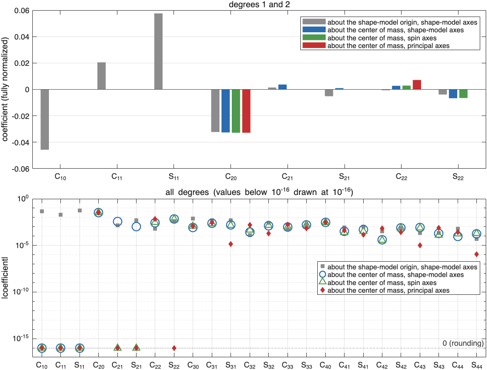
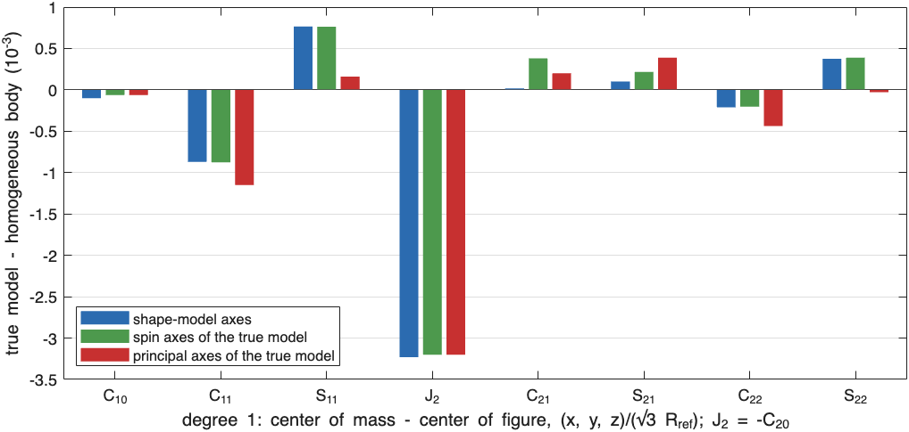
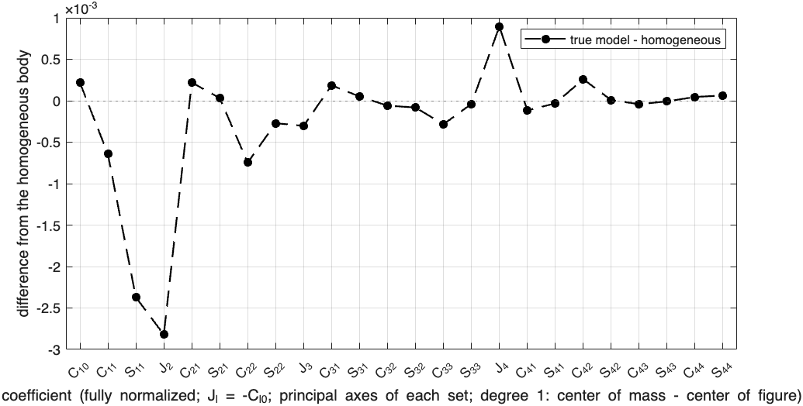

Frames of a gravity field#
Last edited October 20, 2026
A set of gravity coefficients means nothing without the point it is expanded about and the axes its latitude and longitude are measured in. Changing the point or the axes changes every coefficient but not the potential outside the body. This page covers:
- the two changes used for small bodies: moving the expansion point to the center of mass, and turning the axes into the spin axes or the principal axes of inertia;
- what each change makes zero;
- the frames used for past measured and modeled fields;
- how the frame affects a comparison with a homogeneous body;
- which frame a team that makes data sets (maker) or estimates interiors from them (finder) should use, including for a body that may be tumbling, such as Dimorphos.
| Frame | Expansion point | Axes | Coefficients that vanish |
|---|---|---|---|
| Shape-model origin | origin of the shape-model file | shape-model axes | none |
| Center of mass, shape-model axes | center of mass | shape-model axes | , , |
| Center of mass, spin axes | center of mass | along the axis of the largest moment, toward the shape-model -axis | degree 1, and , |
| Center of mass, principal axes | center of mass | principal axes of inertia | degree 1, and , , |
In SBTK, coefficients are always expanded about the center of mass, in the axes of the shape model in use. The functions that work with frames are:
sbtk.gravity.center_of_mass_framegives any field in the shape-model, spin or principal axes, with its principal axes and moments.sbtk.plot.difference_from_homogeneouscompares fields with the homogeneous body in any of the three.sbtk.body.to_frame,sbtk.data.to_frameandsbtk.interior.to_framecarry a body, its measurements and its interior or true model into another frame. Every later step (simulation, packages, density grids, plots and comparisons) then works in that frame.
Summary#
- The information is the same in every frame. The terms a frame makes zero become its definition: three coordinates of the center of mass and up to three angles. Both must be known relative to the shape model.
- Spin axes reproduce fields measured by radio science from a body that rotates about its axis of the largest moment (OSIRIS-REx at Bennu): , but because the -axis is set by a surface feature, not by the mass distribution.
- Principal axes suit rotational dynamics and bodies without a fixed spin axis (tumbling), and also a synchronous satellite.
- Makers should send the measurements, the shape-model file, the true model and the density grid in one frame: spin axes for a body like Didymos, principal axes for Dimorphos (Which frame to use).
- Finders should work in the frame of the package they receive and report in it.
- Against a homogeneous body, the frame-independent results are the angles between the principal axes of the
field and of the homogeneous body (
axes_deg) and the power of each degree.
Moving the expansion point to the center of mass#
Degree 1#
About an expansion point , with the center of mass minus , the degree-1 coefficients are (Gravity coefficients)
so they vanish about the center of mass and only there. A radio-science field is expanded about the center of mass because the spacecraft orbit is integrated about it. The position of the center of mass relative to the shape model is then a separate result, not part of the coefficients.
Higher degrees#
Moving the expansion point changes the coefficients of every degree. The coefficients of degree about the new point are a linear combination of those of degree about the old point, weighted by powers of the displacement: lower degrees enter higher ones, never the reverse. For degree 2 this is the parallel-axis theorem. With and the relations between the inertia tensor and the degree-2 coefficients (Moments of inertia), the unnormalized coefficients about are
where , are about the center of mass. The change is of second order in . For the Didymos model below, the shape-model origin is 57 m from the center of mass ( = 0.13). As a result, is about the center of mass but about the origin.
SBTK applies the translation to all degrees at once with a matrix built from the solid harmonics of point masses
(sbtk.internal.sh_translation). The map is linear and finite, so the result is exact to rounding. The covariance of
a measurement set is propagated through the same matrix.
Rotating the axes#
Principal axes from the degree-2 coefficients#
About the center of mass, the degree-2 coefficients fix the inertia tensor up to a multiple of the identity (MacCullagh's formula). With unnormalized coefficients,
Its eigenvectors are the principal axes of inertia. Its eigenvalues are the principal moments minus , divided by . SBTK orders the principal axes so that:
- is the axis of the smallest moment, of the middle one and of the largest;
- each axis points to the positive side of the shape-model axis nearest to it;
- the frame is right-handed (
sbtk.internal.principal_axes).
An eigenvector has no sign, so a field in principal axes must state these choices. Reversing , for example, changes the sign of every coefficient that is odd in , such as . When two moments are equal (a body symmetric about an axis), the axes in their plane are not defined.
What a rotation changes#
A rotation mixes the coefficients of each degree among themselves and with no others. For fully normalized coefficients, the mixing matrix of each degree is orthogonal, so the power of each degree,
is unchanged. SBTK builds the rotation matrix of each degree from the solid harmonics of points and their rotated images
(sbtk.internal.sh_rotation). It is exact to rounding and also rotates a covariance.
Rotating the coefficients gives the same result as computing the field of the rotated body. The homogeneous field of
the shape model with its vertices rotated into the principal axes equals the rotated homogeneous coefficients to
(testDifferenceInPrincipalAxes). Simulating a model whose body, components and random field are all
carried into another frame also gives the rotated field, density and inertia (testChangeOfFrameEqualsSimulationInIt,
Validation).
Principal axes#
In the principal axes the products of inertia vanish, so
and the whole degree-2 power is in and . Degree 1 stays zero. No rotation makes the coefficients of degree 3 and higher zero: their values change but their power does not.
Spin axes#
The spin axes remove only the tilt of the axis of the largest moment:
- is the axis of the largest moment (the third principal axis);
- is the shape-model -axis projected onto the plane normal to ;
- .
Of all frames with along that axis, this one turns the shape-model axes the least.
The products of inertia that involve vanish, so . is in general not zero, and the axis of the smallest moment lies at longitude
These are the conditions of a body-fixed frame of a body in principal-axis rotation, whose spin axis is the axis of its largest moment. The prime meridian here is the direction of the shape-model -axis.
One field in four frames#
Below is the true model of the documentation example (core, torus, regolith, boulder and a random density field in the
9.3 m Didymos model, Results folders and figures) in the four frames, made by
documentation/tools/make_samples.m:

Example true model of Didymos (shape model didymos_g_9309mm_spc_obj_0000n00000_v003), R_ref = 0.43 km
Coefficients of the true model
coef shape-model origin center of mass center of mass center of mass
shape-model axes shape-model axes spin axes principal axes
C10 -4.572228e-02 0.000000e+00 -1.289007e-18 -3.710172e-20
C11 2.051808e-02 0.000000e+00 4.758569e-17 1.083458e-17
S11 5.758028e-02 0.000000e+00 -7.278009e-19 1.071706e-18
C20 -3.226924e-02 -3.256747e-02 -3.279488e-02 -3.279488e-02
C21 1.485208e-03 3.665234e-03 4.219222e-18 -1.689108e-17
S21 -5.134086e-03 9.837596e-04 1.553676e-17 -2.088580e-17
C22 -6.163254e-04 2.746776e-03 2.863367e-03 7.152014e-03
S22 -3.893035e-03 -6.638447e-03 -6.553811e-03 -5.354679e-17- About the shape-model origin, degree 1 is the largest part of the field: the origin is 57 m from the center of mass.
- About the center of mass, degree 1 is zero. The parallel-axis terms above change the degree-2 coefficients; even changes sign. Degrees 3 and 4 change too.
- In the spin axes, and are zero to rounding. and barely change, because the tilt is only 4.0°.
- In the principal axes, is zero as well. grows from to : the axes turn by 33° about , and the degree-2 power is the same in all three axes.
run("/path/to/SBTK/sbtk_setup.m")
body = sbtk.body.from_mass("Didymos", sbtk.shape.bundled("didymos"), 5.273e11, 0.43);
cof = body.centroid_km; % positions from the center of figure
interior = sbtk.interior.create([sbtk.interior.sphere("core", cof, 0.170, +450), ...
sbtk.interior.sphere("boulder", cof + sbtk.interior.latlon(25, 60, 0.250), 0.040, +900)]);
[exact, truth] = sbtk.data.simulate(body, interior, 4, "frames");
pk = sbtk.internal.sh_packing(4);
about_origin = truth.coef*sbtk.internal.sh_translation(-truth.origin_km, pk, body.R_ref_km)';
cs = sbtk.gravity.center_of_mass_frame(truth, body, "shape"); % degree 1 = 0
cz = sbtk.gravity.center_of_mass_frame(truth, body, "spin"); % and C21 = S21 = 0
cp = sbtk.gravity.center_of_mass_frame(truth, body, "principal"); % and C21 = S21 = S22 = 0
disp(table(cs.labels(1:8)', about_origin(2:9)', cs.coef(1:8)', cz.coef(1:8)', cp.coef(1:8)', 'VariableNames', ...
["coefficient" "about the origin" "shape axes" "spin axes" "principal axes"]))
power = @(c, l) sum(c(pk.deg(2:end) == l).^2);
fprintf("degree-2 power: %.6e (shape), %.6e (spin), %.6e (principal)\n", power(cs.coef, 2), power(cz.coef, 2), ...
power(cp.coef, 2))
fprintf("axis of the largest moment %.2f deg from the shape-model z-axis; smallest at longitude %.1f deg\n", ...
acosd(cp.principal(3, 3)), 0.5*atan2d(cz.coef(cz.labels == "S22"), cz.coef(cz.labels == "C22")))
fprintf("principal moments minus their mean, I/(M R^2): %.5f %.5f %.5f\n", cp.moments)Comparison with the homogeneous body#
sbtk.plot.difference_from_homogeneous subtracts the field of the homogeneous body (density ) from a field.
Both are taken about their own center of mass and expressed in the same axes, which belong to the field (frame
argument). Degree 1 shows the center of mass minus the center of figure in those axes.

True model minus the homogeneous body (both about their own center of mass)
coef shape-model axes spin axes principal axes
J2 -3.231612e-03 -3.202163e-03 -3.202163e-03
C21 1.721657e-05 3.803159e-04 1.995238e-04
S21 1.005986e-04 2.168021e-04 3.896582e-04
C22 -2.103466e-04 -2.023064e-04 -4.383788e-04
S22 3.748967e-04 3.900043e-04 -2.924388e-05
axis of the largest moment from the shape-model z-axis: true model 3.99 deg, homogeneous body 3.56 deg
axis of the smallest moment from the x-axis, in longitude: true model -33.3 deg, homogeneous body -33.2 deg
principal axes of the homogeneous body from those of the true model: tilt 0.44 deg, turn 0.11 deg
in the spin axes, axis of the smallest moment at (1/2) atan2(S22, C22) = -33.2 deg
principal moments minus their mean, I/(M R_ref^2): true model -0.03368 -0.01521 0.04889
homogeneous body -0.03663 -0.01703 0.05367
center of mass - center of figure: -0.6 0.6 -0.1 mWhat each frame shows:
- Shape-model axes. Both fields keep their own , , . The differences mix two things: how far the interior turns the principal axes, and how much it changes the moments.
- Spin axes. The field has . The differences in these two terms are therefore minus the homogeneous body's own terms, and measure the tilt between the two axes of the largest moment (0.44° here). The differences in and contain the turn of the equatorial axes and the change in .
- Principal axes. The field has , so all of the misalignment is in the homogeneous body's terms: , for the tilt and for the turn (0.11° here). The difference in is then the change in .
For small angles, a rotation about one principal axis gives the homogeneous body a product of inertia proportional to times the difference of the other two moments:
A mass excess at adds the products of inertia , and . An excess at mid-latitude, away from the -axis, tilts the axis of the largest moment. An excess in a direction between the - and -axes turns the axes in the equatorial plane.
In the example, and the tilt is 0.44°, which gives about , shared between
and according to the direction of the tilt ( and in
the principal axes): several times the 1σ of assumed for degree 2. The plot returns the tilt and the turn as axes_deg. They, and the
power of each degree, do not depend on the frame. Which frame to plot in depends on what the plot is for: the spin
axes show the tilt directly in , , as a mission field would; the principal axes isolate all
orientation differences in the homogeneous body's terms.

Frames used for measured and modeled fields#
Body-fixed frames of measured fields#
Gravity fields from radio science, and the shape models made with them, are given in a body-fixed (cartographic) frame:
- is the spin pole;
- points to the prime meridian, which is defined by a surface feature;
- the origin is the center of mass found from the tracking data.
NEAR at Eros, Dawn at Vesta and Ceres, and OSIRIS-REx at Bennu all used frames of this kind. For a body in principal-axis rotation, the spin pole is the axis of the largest moment, so . The prime meridian, however, has nothing to do with the mass distribution, so is not zero.
Example: Bennu#
The OSIRIS-REx field of Bennu (JPL, 2019) and the Bennu shape model of the Bennu project, with
the homogeneous Bennu in the same frame (documentation/tools/make_samples.m):
Bennu: OSIRIS-REx gravity field (JPL 2019), shape model bennu_higher_qual, R_ref = 0.290 km
Body-fixed frame of the shape model and the field: z the spin pole, x the prime meridian, origin the center of mass
center of figure (centroid of the shape model): 1.34 -0.44 0.24 m from the origin (1.43 m)
coef measured 1-sigma homogeneous
C20 -1.926101e-02 5.20e-05 -1.875290e-02
C21 -2.178217e-14 7.75e-10 4.653539e-04
S21 3.000970e-15 7.75e-10 -9.420563e-05
C22 3.064995e-03 5.27e-05 3.538331e-03
S22 -1.094504e-03 1.07e-04 -8.917091e-04
axis of the largest moment from z: measured 0.000 deg, homogeneous 0.754 deg
axis of the smallest moment, longitude: measured -9.83 deg, homogeneous -7.08 deg
between the axes of the largest moment of the field and of the homogeneous body: 0.754 deg- The origin is the center of mass. The field has no degree-1 terms. The centroid of the shape model (the center of figure) is 1.4 m from the origin, which itself is a sign of a non-uniform interior.
- and are zero. Their values are with a 1σ of , so they were constrained to zero by taking the spin pole as the axis of the largest moment.
- The frame is not the principal frame of the shape. The homogeneous Bennu has : its axis of the largest moment is 0.75° from the spin pole.
- is not zero. The measured field's axis of the smallest moment is at longitude −9.8°; the homogeneous body's is at −7.1°.
An interior model of Bennu must therefore tilt the axis of the largest moment by 0.75° and turn the equatorial axes by 2.7°. In Cavale et al. (Icarus) this is what the boulders that target / and / do. Rotating the field 9.8° about would make zero. It would also separate the field from the frame of the shape model, the maps and the navigation, and gain nothing, since the angle is already given by .
Principal-axis frames#
Principal axes are used for:
- rotational dynamics: the equations of rotation (Euler's equations) are diagonal in them;
- model fields made for dynamics studies before a body is visited;
- tumbling asteroids, whose rotation state is solved in the principal axes of the body (for example 4179 Toutatis and 99942 Apophis).
Which frame to use#
Makers#
The HLP6 makers agreed (20 October 2026) on the first of these two choices.
- The frame and origin of the shape model file, as distributed (the HLP6 choice). The package contains the
shape model file unchanged. The gravity field is expanded about its origin, so degree 1 gives the center of mass and
is not zero, and , are those of the whole body in the shape-model axes (the homogeneous
Didymos v003 alone has ). The moments of inertia are about the same origin. Make the
exact values with
sbtk.data.simulateand expand them about[0 0 0]withsbtk.data.expand_about. Nothing is moved or rotated, so every team can compare with its own computation on the file as it is; a package of the homogeneous body lets the makers check that they compute the same field (Hera blind test). - Moved to the center of mass and rotated (kept in SBTK; tutorial ex09). The origin is the center of mass of the true model, and the axes are - the spin axes for a body observed to rotate about one axis (Didymos): and , as a mission field would look. The homogeneous Didymos v003 is already 3.6° off the shape-model -axis, and the example true model 4.0°; - the principal axes for a body that may be tumbling, or a synchronous satellite (Dimorphos; Tumbling bodies).
The body, the exact values and the true model are carried into that frame (code below), and the package contains the moved and rotated shape model.
In either case, use one frame for everything you send: the measurements, the shape model file, the interior-model package and the density grid, so that the receiving teams' density grids coincide with yours. Define the interior in the frame of the shape model file.
Points to check:
The next three points concern the moved and rotated frame.
- The frame of the true model is exact. A real spin pole has an error , which leaves , about for Didymos at . A package of exact values has exactly; the 1σ a receiving team gives them stands for the pole error. If that 1σ is much smaller, the data define the pole more precisely than a mission would.
- The rotation carries information about the interior. It is the same information the field gives in the
shape-model axes (, ), and the same a mission's pole and field give together, no more.
conventions.txtrecords the change of frame from the original shape-model file. - The origin is the center of mass. Mission body-fixed frames put the origin at the estimated center of mass
(Bennu: the centroid is 1.4 m from the origin). The shape model, the gravity field and the moments of inertia then
share one origin, and a receiving team has nothing to move. The origin of the original file
has no physical meaning (Didymos v003: 57 m from the center of figure). Moving the origin adds no information: a
package of exact values gives the exact center of mass in
center_of_mass.txtanyway, together with the center of figure, and their offset, which the interior sets, is the same in every frame. For a package with noise, a mission's origin is the measured center of mass; translate to it aftersbtk.data.add_noise(a translation applies to any set). - Uncertainties belong to a frame. A table of one σ per coefficient describes the solution it comes from, in that
solution's axes. In other axes the same covariance has correlations, and two coefficients of one degree can have
very different σ (in a principal-axis solution, for example, ). Applying
such a table coefficient by coefficient in other axes is an approximation.
sbtk.data.to_framerotates a full covariance exactly. - Components tied to the rotation. A component defined in the shape-model frame, such as a torus about its
-axis, is tilted relative to the spin axes by the angle between them. If it should lie about the spin axis, as an
equatorial torus does, set its axis with
sbtk.interior.align_with_spin_axisbefore simulating (Axes of components).interior_model.txtgives the geometry in the frame of the package.
Finders#
- Work in the frame of the package. Its shape model and its measurements are in the same frame. Define the components of the inversion model in that frame.
- A package in the frame and about the origin of the shape model file (the HLP6 choice): fit the coefficients,
degree 1 included, and the moments of inertia as they are, about the origin of the file, with no change of frame.
sbtk.exchange.read_datareturns them about[0 0 0](coef_about = 'origin'), and the inversion predicts the model's coefficients and inertia about the same point. The homogeneous body already has a degree 1 (its center of figure, 57 m from the origin of the Didymos v003 file) and a , ; the interior has to account for the difference, in particular the offset of the center of mass from the center of figure. - If a field and its shape model are in different frames (for example a field in principal axes and a shape model
in its own frame, with the rotation given), rotate the shape model with
sbtk.body.to_frame, not the measurements. - Report the solution and its density grid in the frame of the package, so that the cells coincide with those of the interior-model package.
- To interpret the orientation of the field, compare it with the homogeneous body in the spin or principal axes,
and quote the angles
axes_deg.
Packages moved to the center of mass and rotated#
run("/path/to/SBTK/sbtk_setup.m")
body = sbtk.body.from_mass("Didymos", sbtk.shape.bundled("didymos"), 5.273e11, 0.43);
cof = body.centroid_km; % place from the center of figure
torus = sbtk.interior.torus("torus", 0.370, 0.055, 0, -500);
torus.center_km = cof;
interior = sbtk.interior.create([sbtk.interior.sphere("core", cof, 0.170, +450), torus]);
interior = sbtk.interior.align_with_spin_axis(body, interior, "torus", 0.01, 20); % torus about the spin axis
[exact, truth] = sbtk.data.simulate(body, interior, 4, "spin example"); % in the frame of the shape-model file
spin = sbtk.gravity.center_of_mass_frame(truth, body, "spin"); % or "principal"
body = sbtk.body.to_frame(body, spin.com_km, spin.axes, "didymos_v003_com_spin_axes"); % origin: center of mass
truth = sbtk.interior.to_frame(truth, spin.com_km, spin.axes);
exact = sbtk.data.to_frame(exact, spin.com_km, spin.axes); % C21 = S21 = 0
folder = tempname; % exact values: no uncertainties, no noise
data = sbtk.exchange.write_data(folder, "DOC-DATA9-Didymos", body, exact, "Example team");
model = sbtk.exchange.write_model(folder, "DOC-MOD9-Didymos", "DOC-DATA9-Didymos", body, truth, exact, 0.040, ...
"Example team");
[received, rbody] = sbtk.exchange.read_data(data); % what a receiving team reads
fprintf("%s: C21 %+.1e, S21 %+.1e\n", rbody.shape.name, received.coef(5:6))
unc = sbtk.data.uncertainties([sbtk.units.offset_to_degree1(0.002, 0.43), 1e-4, 2e-4, 4e-4], 2e-3, 0.02);
received = sbtk.data.set_uncertainties(received, unc); % the receiving team's uncertaintiesThe package contains DOC-DATA9-Didymos_didymos_v003_com_spin_axes.obj, named after the package because no other
package has this shape model: the DART shape model with every vertex moved to the center of mass of the true model and
rotated into its spin axes, with the center of mass and the
columns of the spin axes, both in the frame of the original file. The center of mass is at the origin of that file,
and the gravity field, the moments of inertia and every position of both packages are in its frame, so a receiving team
uses it as it is. Its conventions.txt states what the origin and the axes are (read from the values: the center of
mass at the origin, ) and the change of frame from the original file.
interior_model.txt describes the torus with its axis in the new frame: along , because it was aligned with the spin
axis. The package has exact values without uncertainties
(Packages of exact values). The HLP6 runners have a FRAME
setting that does this (Hera blind test).
Tumbling bodies and Dimorphos#
The gravity field does not depend on the rotation. The coefficients and the principal axes describe the mass distribution in a body-fixed frame and do not change with the rotation state.
What changes for a tumbling body is the meaning of "spin axis". In principal-axis rotation the body spins about its axis of the largest moment. A tumbling body (non-principal-axis rotation) has angular momentum fixed in space, but its angular velocity moves through the body, so no body-fixed axis is the spin axis. The rotation is described in the principal axes, in which Euler's equations are diagonal.
Dimorphos. Before the DART impact, Dimorphos was taken to rotate synchronously with its orbit about Didymos. In that state the body-fixed frame ( the orbit normal, toward Didymos on average) is close to its principal axes. The impact changed its orbit, and simulations (Agrusa et al., 2021, Icarus) showed that it could have excited non-principal-axis rotation. Its present rotation state is not known; Hera will measure it. The DART shape model v004 is from before the impact, and the impact may have changed the shape.
For making and finding data sets this means:
- Frame. Use the principal axes. They suit a tumbling body and, within a few degrees, a synchronous one. The spin axes remain a valid body-fixed frame for a tumbler, but their -axis is no longer a spin axis.
- What the rotation measures.
- A librating synchronous body gives the libration ratio (Moments of inertia).
- A tumbling body gives two ratios of principal moments, for example and , because Euler's equations depend only on ratios. Together with the degree-2 field, which fixes and in units of , two ratios fix all three moments, including the trace that the gravity field cannot give.
A tumbling Dimorphos would therefore constrain the radial density structure better than a librating one.
- Moment-ratio measurements in SBTK. In principal axes the ratios are the linear rows and
, with σ = , added with sbtk.data.add_moi_row. In other axes the weights
follow from the principal axes of the degree-2 field. The exchange format gives inertia elements and the libration
ratio but not moment ratios. A group can give , , in principal axes, which are , , ,
or agree on an extension of the format.
- The interior model is made as before. The true interior is defined in the shape-model frame and carried into the
principal axes; the rotation state affects only the rotation measurements. Finders invert as usual in the frame of
the package.
run("/path/to/SBTK/sbtk_setup.m")
body = sbtk.body.from_mass("Dimorphos", sbtk.shape.bundled("dimorphos"), 2.700e9, 0.10);
interior = sbtk.interior.create(sbtk.interior.ellipsoid("core", body.centroid_km + [0.004 0 0], [0.045 0.040 0.028], ...
[15 0 0], +400));
[exact, truth] = sbtk.data.simulate(body, interior, 3, "tumbling example");
cp = sbtk.gravity.center_of_mass_frame(truth, body, "principal");
exact = sbtk.data.to_frame(exact, [0 0 0], cp.axes); % Ixx = A, Iyy = B, Izz = C
I = exact.moi_tensor_norm;
rA = I(1, 1)/I(3, 3); rB = I(2, 2)/I(3, 3); sigma_r = 0.005;
obs = sbtk.data.select_moi(exact, strings(1, 0));
obs = sbtk.data.add_moi_row(obs, "A_over_C", [1 0 -rA 0 0 0], 0, sigma_r*I(3, 3));
obs = sbtk.data.add_moi_row(obs, "B_over_C", [0 1 -rB 0 0 0], 0, sigma_r*I(3, 3));
fprintf("A/C = %.4f, B/C = %.4f; off-diagonal elements in principal axes: %.1e\n", rA, rB, max(abs(I(~eye(3)))))